DC Motor Speed: Root Locus Controller Design
Key MATLAB commands used in this tutorial are: tf , sisotool
Contents
From the main problem, the dynamic equations in the Laplace domain and the open-loop transfer function of the DC Motor are the following.
(1)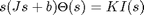
(2)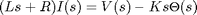
(3)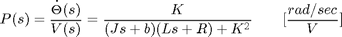
The structure of the control system has the form shown in the figure below.

For the original problem setup and the derivation of the above equations, please refer to the DC Motor Speed: System Modeling page.
For a 1-rad/sec step reference, the design criteria are the following.
- Settling time less than 2 seconds
- Overshoot less than 5%
- Steady-state error less than 1%
Now let's design a controller using the methods introduced in the Introduction: Root Locus Controller Design page. Create a new m-file and type in the following commands.
J = 0.01;
b = 0.1;
K = 0.01;
R = 1;
L = 0.5;
s = tf('s');
P_motor = K/((J*s+b)*(L*s+R)+K^2);
Drawing the open-loop root locus
The main idea of root locus design is to predict the closed-loop response from the root locus plot which depicts possible closed-loop pole locations and is drawn from the open-loop transfer function. Then by adding zeros and/or poles via the controller, the root locus can be modified in order to achieve a desired closed-loop response.
We will use for our design the SISO Design Tool graphical user interface. This tool allows the you to graphically tune the controller via the root locus plot. Let's first view the root locus for the uncompenstated plant. This is accomplished by adding the command sisotool('rlocus', P_motor) to the end of your m-file and running the file at the command line.
Two windows will initially open, one is the SISO Design Task which will open with the root locus of the uncompensated plant, and the other is Control and Estimation Tool Manager which allows you to design compensators, analyze plots, etc. Right-click on the root locus plot and click on Grid. Your plot will then appear as follows.
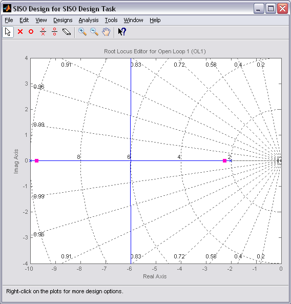
Finding the loop gain
Recall that our design requirements specify that the settling time be less than 2 seconds and that the overshoot be less than 5%. The location of the system's closed-loop poles provide information regarding the system's transient response. The SISO Designt Tool allows you to specify the region in the complex s-plane corresponding to specific design requirements. The provided regions correspond to a canonical second-order system, but in general are a good place to start from even for higher-order systems or systems with zeros.
These desired regions can be added to the root locus plot by right-clicking on the plot and choosing Design Requirements > New from the resulting menu. You can add many design requirements including Settling time, Percent overshoot, Damping ratio, Natural frequency, and generic Region constraint.
Adding our settling time and percent overshoot requirements to the root locus plot produces the following figure.
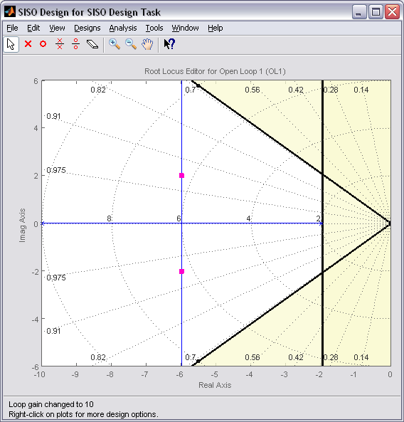
The resulting desired region for the closed-loop poles is shown by the unshaded region of the above figure. More specifically, the two rays centered at the origin represent the overshoot requirement; the smaller the angle these rays make with the negative real-axis, the less overshoot is allowed. The vertical line at s = -2 represents the settling time requirement, where the farther to left the closed-loop poles are located the smaller the settling time is. From examination of the above figure, there are values of the loop gain that will place both closed-loop poles in the desired region. This can be seen from the fact that the two branches of the root locus are symmetric and pass through the unshaded region. Furthermore, since the closed-loop system has two poles with no zeros, placing the closed-loop poles in the shown region will guarantee satisfaction of our transient response requirements.
You can select a specific pair of closed-loop poles from the resulting figure in order to determine the corresponding loop gain that places the poles at that location. For our system, let's choose to place the closed-loop poles so that they are located on the vertical branches of the root-locus between the real axis and the damping requirement. The pink boxes on the root locus indicate the location of the closed-loop poles for the current loop gain. Clicking on the pink boxes and dragging them along the root locus to the desired location automatically modifies the controller to place the closed-loop poles at the indicated position. Let us drag a closed-loop pole to a location near -6 + 2i. The pole location will be indicated at the bottom of the window along with the corresponding damping ratio and natural frequency. Releasing the mouse button will further show at the bottom of the window the corresponding loop gain, which in this case is approximately 10.
We can also generate the closed-loop step response for the system with this new gain. From the Control and Estimation Tool Manager, click on the Analysis Plots tab and under Plot1, choose Step, a blank window titled LTI Viewer for SISO Design Task will appear. Right-click on this window and then from Systems menu choose the first item which is Closed Loop r to y (blue). The closed-loop step response will then appear in the figure. You can also identify some characteristics of the step response. Specifically, right-click on the figure and under Characteristics choose Settling Time. Then repeat for Steady State. Your figure will appear as shown below.
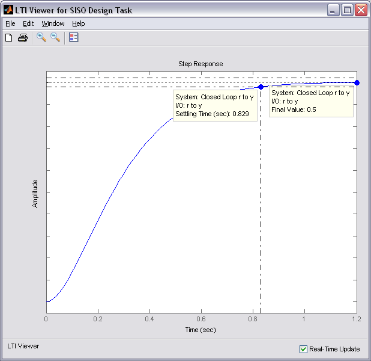
From inspection of the above, one can see that there is no overshoot and the settling time is less than one second, therefore, the overshoot and settling time requirements are satisfied. However, we can also observe that the steady-state error is approximately 50%. If we increase the loop gain to reduce the steady-state error, the overshoot will become too large. You can see this for yourself by graphically moving the closed-loop poles vertically upward along the root locus, this corresponds to increasing the loop gain. The step response plot will change automatically to reflect the modified loop gain. We will attempt to add a lag controller to reduce the steady-state error requirement while still satisfying the transient requirements.
Adding a lag controller
In the above we saw that the overshoot and settling time criteria were met with the proportional controller, but the steady-state error requirement was not. A lag compensator is one type of controller known to be able to reduce steady-state error. However, we must be careful in our design to not increase the settling time too much. Let's first try adding a lag compensator of the form given below.
(4)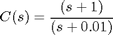
We can use the SISO Design Tool to design our lag compensator. To make the SISO Design Tool have a compensator parameterization corresponding to the one shown above, click on the Edit menu at the top of the Control and Estimation Tools Manager window and choose SISO Tool Preferences. Then From the Options tab, select a Zero/pole/gain parameterization as shown below.
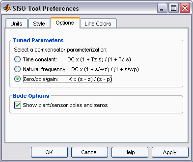
You can then add the lag compensator from under the Compensator Editor tab of the Control and Estimation Tools Manager window. Specifically, right-click in the Dynamics section of the window and select Add Pole/Zero > Lag. Then enter the Real Zero and Real Pole locations as shown in the following figure.
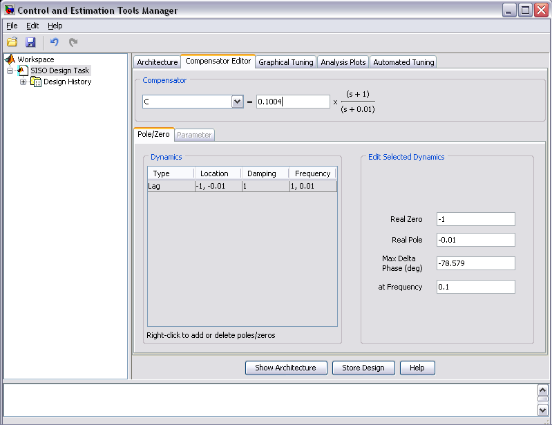
Note that the phase lag contributed by the compensator and the frequency where it is located are updated to match the pole and zero locations chosen.
Finding the loop gain with a lag controller
Notice how the root locus has changed to reflect the addition of the pole and zero from the lag compensator as shown in the figure below. We can again choose closed-loop pole locations to attempt to achieve our desired transient requirements. Let's attempt to place two of the closed-loop poles in our desired region near the boundary of the overshoot requirement. For example, a loop gain of approximately 20 will place the poles at the positions shown in the figure below.
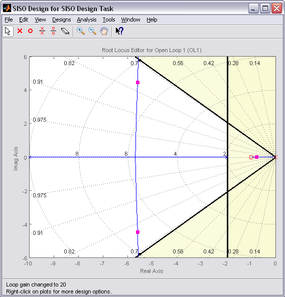
The corresponding closed-loop step response will then update automatically to match the figure shown below.
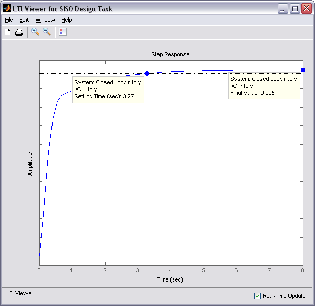
As you can see, the response is not quite satisfactory even though two of the closed-loop poles were placed in the desired region. The reason for this is because the closed-loop system no longer has the form of a canonical second-order system. Specifically, there is a third pole on the real axis indicated in the root locus plot above that is outside of the desired region. The fact that this third pole is to the right of the two conjugate poles placed above means that it will slow the system response down, that is why the settling time requirement is no longer met. Additionally, the overshoot requirement is met easily even though the two conjugate poles are near the edge of the allowed region. This is due again to the third pole which is well damped and tends to dominate the response because it is "slower" than the other poles. What this means is that we can further increase the loop gain such that the conjugate poles move beyond the diagonal lines while still meeting the overshoot requirement.
You can now return to the root locus plot and graphically move the conjugate poles farther away from the real axis; this corresponds to increasing the loop gain. Before you do this, however, you likely need to change the limits on the imaginary axis so that you can move the poles a sufficient distance. In order to change these limits, double-click on the root locus plot to open the Property Editor, then click on the Limits tab and change the imaginary axis limits to [-15,15] as shown below.
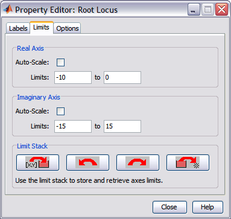
Experiment with different gains (closed-loop pole locations) until you achieve the desired response. Below is the root locus with a loop gain of 44 and the corresponding closed-loop step response.
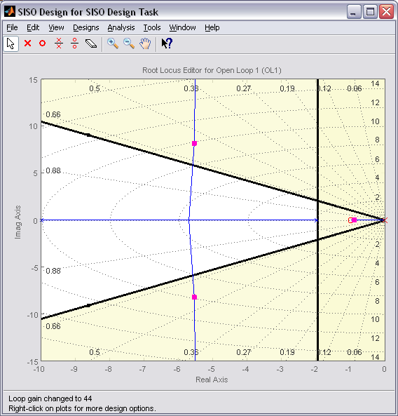
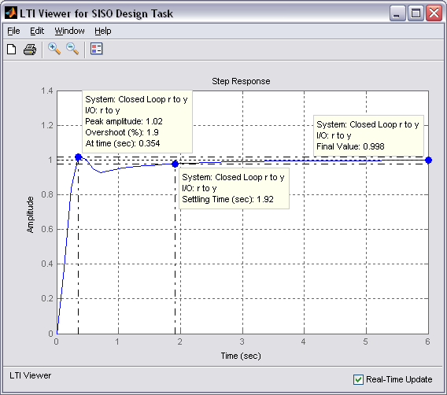
Now the settling time is less than 2 seconds and the steady-state error and overshoot requirements are still met. As you can see, the root locus design process requires some trial and error. The SISO Design Tool is very helpful in this process. Using the SISO Design Tool, it is very easy to tune your controller and immediately see the effect on the root locus and various analysis plots, like the closed-loop step response. If we had not been able to get a satisfactory response by tuning the loop gain, we could have tried moving the pole and zero of the lag compensator or we could have tried a different type of dynamic compensator (additional poles and/or zeros).